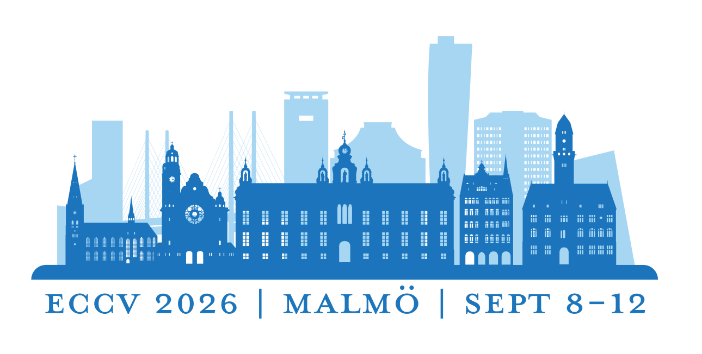
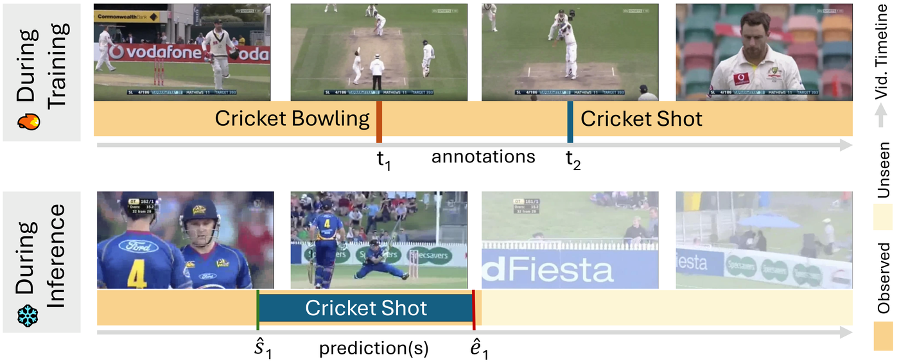
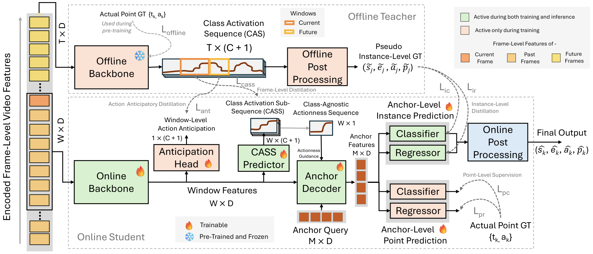
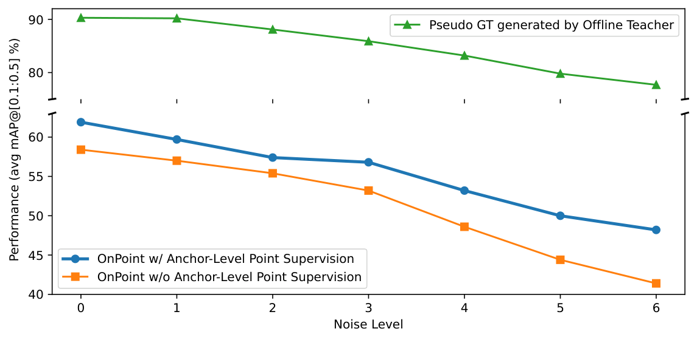
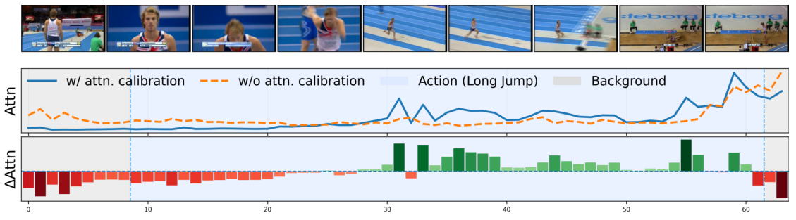
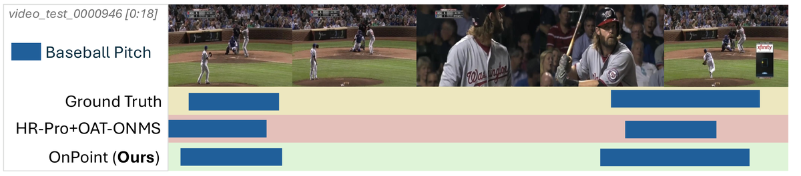
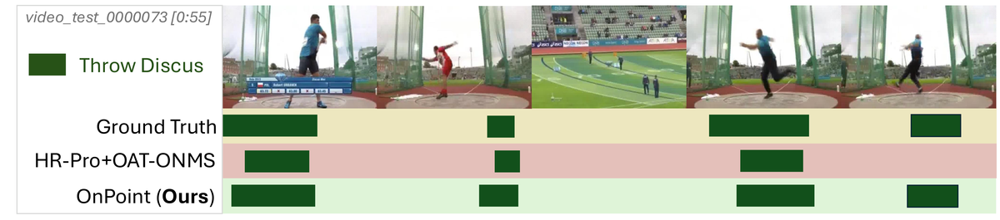

We introduce Point-Supervised Online Temporal Action Localization (POTAL), which localizes actions in streaming video using only one timestamp per training instance, and propose OnPoint as the first framework for this setting. OnPoint is also the first offline-to-online distillation approach for temporal action localization, with consistent gains across five benchmarks.
Generated by NotebookLM.
Temporal Action Localization (TAL) typically relies on segment annotations or offline access to full videos, limiting scalability and online use. We introduce Point-Supervised Online TAL (POTAL), which localizes actions in streaming videos using only one temporal point per instance. To solve POTAL, we propose OnPoint, an offline-to-online multi-level distillation framework that transfers knowledge from a point-supervised offline teacher to an online student via (i) pseudo-segment instance distillation, (ii) class-activation sequence distillation, and (iii) anticipatory window-level distillation. We further improve robustness by incorporating the original point labels into student training and by refining anchor decoding with actionness-guided attention calibration. Experiments on five datasets show OnPoint consistently outperforms strong baselines, establishing a solid foundation for POTAL.
Point-Supervised Online Temporal Action Localization (POTAL) combines two practical constraints that existing methods address only separately: strict online inference (no future frames, no offline revision) and point-level supervision (one timestamp and class label per action instance during training). At inference, the model must emit action proposals immediately as segments end.

OnPoint distills knowledge from a frozen, point-supervised offline teacher into a causal online student. The teacher leverages full-video context to generate pseudo segments, class activation sequences (CAS), and future-window cues; the student processes sliding windows and learns from multi-level supervision plus direct anchor-level point labels.

| Method | 0.1 | 0.2 | 0.3 | 0.4 | 0.5 | Avg 0.1:0.5 |
Avg 0.1:0.7 |
|---|---|---|---|---|---|---|---|
| Distillation-free baseline* | 59.9 | 45.8 | 31.8 | 18.4 | 10.3 | 33.3 | 24.8 |
| HR-Pro + OAT-ONMS* | 66.6 | 63.7 | 58.7 | 49.3 | 40.1 | 55.7 | 46.3 |
| OnPoint (Ours) | 73.6 | 70.3 | 63.9 | 56.3 | 45.2 | 61.9 | 51.1 |
* Baselines reproduced by the authors. Full comparison with offline, fully supervised, and online methods is in the paper.
| Method | 0.1 | 0.2 | 0.3 | 0.4 | 0.5 | Avg |
|---|---|---|---|---|---|---|
| TSASPC + OAT-ONMS* | 27.0 | 24.4 | 20.8 | 16.0 | 10.3 | 19.7 |
| OnPoint (Ours) | 30.9 | 28.6 | 24.5 | 18.9 | 12.6 | 23.1 |
| Method | 0.1 | 0.2 | 0.3 | 0.4 | 0.5 | Avg |
|---|---|---|---|---|---|---|
| TSASPC + OAT-ONMS* | 55.9 | 52.6 | 45.2 | 35.2 | 22.6 | 42.3 |
| OnPoint (Ours) | 58.2 | 53.5 | 47.4 | 37.4 | 26.4 | 44.6 |
On FineAction, OnPoint reaches 7.4% avg mAP (+2.1% over the best baseline). On EPIC-Kitchens-100, avg mAP improves from 8.5% to 10.5%.




@inproceedings{reza2026onpoint,
title = {OnPoint: Offline-to-Online Multi-Level Distillation for Point-Supervised Online Temporal Action Localization},
author = {Reza, Sakib and Jagatap, Gauri and Moghaddam, Mohsen and Camps, Octavia and Fanelli, Andrea},
booktitle = {European Conference on Computer Vision (ECCV)},
year = {2026}
}
This work was supported in part by the U.S. National Science Foundation (NSF) under Grant No. FW-HTF-2128743 and by the Office of Naval Research (ONR) under Grant No. N00014-21-1-2431. Any opinions, findings, conclusions, or recommendations expressed in this material are those of the authors and do not necessarily reflect the views of the NSF or ONR.